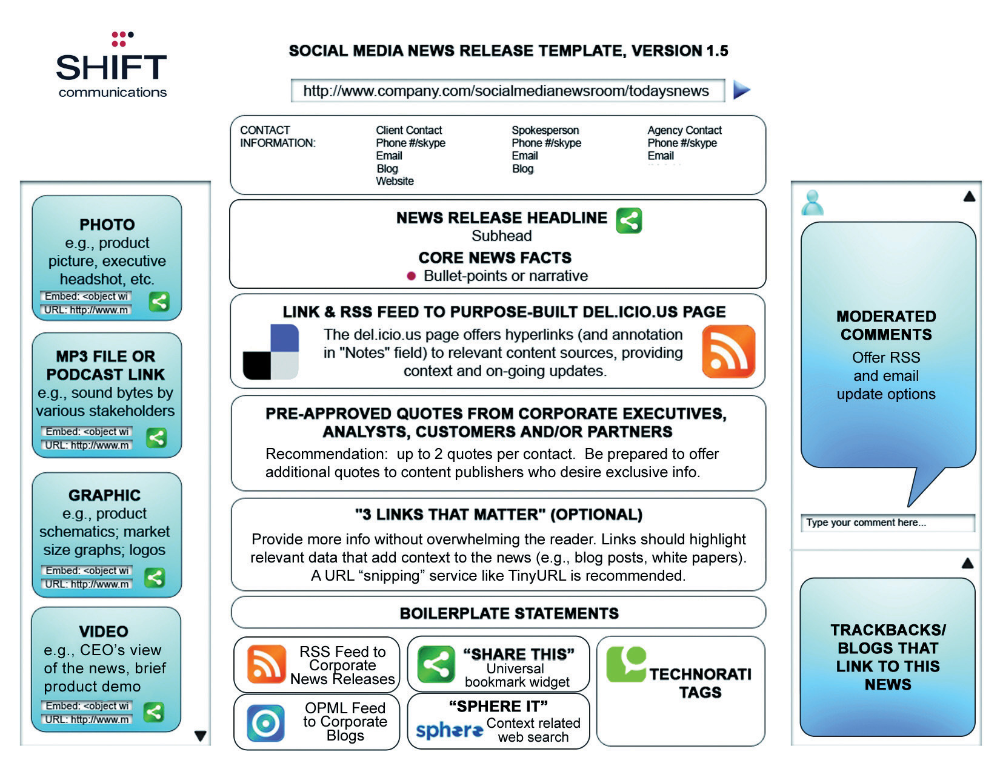

The press release is a stalwart of public relations (PR). It is a standardized format for releasing information. Originally intended to provide information to journalists, press releases are increasingly being read without going through the journalists first. PR has also realized the tremendous impact of bloggers, and many PR professionals are using the same press releases in their communications with bloggers. Today, with many offline press offices moving online, journalists are also bloggers, and bloggers are the new citizen journalists, so the lines are becoming even further blurred.
Newswires, like article directories, allow for online submission of press releases. In turn, these are syndicatedMaking content available for distribution among selected clients. via RSS (really simple syndication)An easy way of syndicating content and aggregating content. RSS allows for users to access the information on a Web site via a direct feed without all the extra useless information., and so are picked up by the news engines, such as Google News, Yahoo! News, and MSN News. Many people pick up their news via these online news engines, which aggregate news from a number of publications and newswires, and so the press release is becoming an ever more crucial means of reaching a growing audience.
As well as promoting conversation around your company and its products, online press releases should drive traffic to your site. To achieve this, press releases need to be optimized to contain related key phrases and links. Not only is this important for the press releases being picked up by news engines, but there are many journalists who will simply reproduce the copy of a well-written press release. Ensure that these reproductions positively impact your SEO (search engine optimization) efforts by optimizing your press releases for key phrases and links.
Don’t forget to publish your press releases on your own site before sending them to the release sites. You’ll want to be considered as the “expert” in the search engine’s eyes on the subject, and journalists also need to be able to find all the information they need on a company Web site.
Journalists usually extract information from a press release and supply commentary when they write an article. How do you think the fact that the press releases are now being read directly by the public affects the press release?
Like articles, you will need to write a description and allocate keywords to the press release. You will need to ensure that all media contact information is listed, usually in the boilerplateStandard wording about an organization that usually appears at the foot of a press release. Similar to the “About the Author” section of a syndicated online article. or in the “About the Author” section. Each site will specify exactly what information is required. Very few of the press release sites allow you to convert your releases into HTML (especially the free-release sites). Apart from the keywords, the category you select for your press release is extremely important, so be sure to have a good look at the categories the site offers and make sure that you select the most appropriate one.
Most of the sites offer a free option and a paid option. The paid option provides a host of additional benefits, and it is worth considering paying for a membership to one of them.
The benefits of online press releases are numerous and include the following:
Here are some press release sites to consider:
Blogs and other consumer-generated media (CGM)Another word for social media or content produced by end users as opposed to businesses. are sometimes referred to as citizen journalism. The reach and influence of CGM means that press releases are often finding their way to the in-boxes of content creators. While many journalists are becoming disillusioned with the standard press release format, the press release can be seen as overhyped corporate speak by time-starved and transparency-focused bloggers.
Figure 12.1 Template for a Social Media News Release
Pitching to bloggers can be a sensitive task, and there are some guidelines outlined in this chapter, but PR firms such as Edelman and Shift Communications have created templates for a social media press release (SMPR) designed to communicate facts more clearly and concisely and to use the tools provided by social mediaMedia that are published, created, and shared by individuals on the Internet, such as blogs, images, video, and more..
This is the outcome of an evolving conversation among PR companies, journalists, and bloggers. It is a work in progress, and there is plenty being said both for and against this approach, but it is an elegant example of PR firms listening to the conversation, engaging, and responding.
Go to http://www.edelman.com/news for some examples of the Edelman version of the SMPR in action.
Writing a blog is one of the best ways for a company to build its own voice in the new world of social media and citizen journalism. Not only do blogs play a role in SEO (with fresh content written with key phrases in mind), they also play a strategically important role in reaching out to customers and connecting with them.
Blogging takes a company right into the heart of the conversation and demonstrates the company’s comfort with this direct communication channel. A blog means that there is regular commentary that is spoken in the voice of the company. Additionally, blogging teaches companies how to engage personally with their customers.